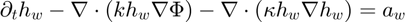
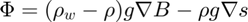
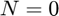

Contents
function [UserVar,RR,KK]=WaterFilmThicknessEquationAssembly(UserVar,CtrlVar,MUA,F0,F1,k,eta)
narginchk(7,7)
Water film thickness equation

where


I think of

as a velocity, and write the equation as

It is also possible to add some further linear diffusion term, and to enable/disable the advection and the non-linear diffusion term by selecting the parameters  ,
,  , and
, and  , accordingly
, accordingly

The system to solve if K dx = -R
Notice the sign on the right-hand side
ndim=2; dof=1; neq=dof*MUA.Nnodes; theta=CtrlVar.theta; dt=CtrlVar.dt ; alphaFlag=CtrlVar.WaterFilm.AdvectionFlag; betaFlag=CtrlVar.WaterFilm.DiffusionFlag; % Phi=F1.g.* ( (F1.rhow-F1.rho).*F1.B + F1.rho.*F1.s) ; % does not change, if s and b do not kappa=F1.g*(F1.rhow-F1.rho).*k ; etanod=reshape(eta(MUA.connectivity,1),MUA.Nele,MUA.nod); h0nod=reshape(F0.hw(MUA.connectivity,1),MUA.Nele,MUA.nod); h1nod=reshape(F1.hw(MUA.connectivity,1),MUA.Nele,MUA.nod); a0nod=reshape(F0.aw(MUA.connectivity,1),MUA.Nele,MUA.nod); a1nod=reshape(F1.aw(MUA.connectivity,1),MUA.Nele,MUA.nod); u0nod=reshape(F0.uw(MUA.connectivity,1),MUA.Nele,MUA.nod); u1nod=reshape(F1.uw(MUA.connectivity,1),MUA.Nele,MUA.nod); v0nod=reshape(F0.vw(MUA.connectivity,1),MUA.Nele,MUA.nod); v1nod=reshape(F1.vw(MUA.connectivity,1),MUA.Nele,MUA.nod); FG=1-F1.GF.node ; % FG=HeavisideApprox(100,F1.b-F1.B,CtrlVar.WaterFilm.qwAfloatTreshold); FGnod=reshape(FG(MUA.connectivity,1),MUA.Nele,MUA.nod); kappanod=reshape(kappa(MUA.connectivity,1),MUA.Nele,MUA.nod); Kelements=zeros(MUA.Nele,MUA.nod,MUA.nod); Relements=zeros(MUA.Nele,MUA.nod); l=sqrt(2*MUA.EleAreas); % vector over all elements for each integration point for Iint=1:MUA.nip fun=shape_fun(Iint,ndim,MUA.nod,MUA.points) ; % nod x 1 : [N1 ; N2 ; N3] values of form functions at integration points Deriv=MUA.Deriv(:,:,:,Iint); detJ=MUA.DetJ(:,Iint); % Deriv : Nele x dof x nod % detJ : Nele % values at integration point h0int=h0nod*fun; h1int=h1nod*fun; u0int=u0nod*fun; u1int=u1nod*fun; v0int=v0nod*fun; v1int=v1nod*fun; a0int=a0nod*fun; a1int=a1nod*fun; FGint=FGnod*fun; kappaint=kappanod*fun; etaint=etanod*fun; dh0dx=zeros(MUA.Nele,1); dh0dy=zeros(MUA.Nele,1); dh1dx=zeros(MUA.Nele,1); dh1dy=zeros(MUA.Nele,1); du0dx=zeros(MUA.Nele,1); du0dy=zeros(MUA.Nele,1); du1dx=zeros(MUA.Nele,1); du1dy=zeros(MUA.Nele,1); dv0dx=zeros(MUA.Nele,1); dv0dy=zeros(MUA.Nele,1); dv1dx=zeros(MUA.Nele,1); dv1dy=zeros(MUA.Nele,1); % derivatives at one integration point for all elements for Inod=1:MUA.nod dh0dx=dh0dx+Deriv(:,1,Inod).*h0nod(:,Inod); dh0dy=dh0dy+Deriv(:,2,Inod).*h0nod(:,Inod); dh1dx=dh1dx+Deriv(:,1,Inod).*h1nod(:,Inod); dh1dy=dh1dy+Deriv(:,2,Inod).*h1nod(:,Inod); du0dx=du0dx+Deriv(:,1,Inod).*u0nod(:,Inod); du0dy=du0dy+Deriv(:,2,Inod).*u0nod(:,Inod); du1dx=du1dx+Deriv(:,1,Inod).*u1nod(:,Inod); du1dy=du1dy+Deriv(:,2,Inod).*u1nod(:,Inod); dv0dx=dv0dx+Deriv(:,1,Inod).*v0nod(:,Inod); dv0dy=dv0dy+Deriv(:,2,Inod).*v0nod(:,Inod); dv1dx=dv1dx+Deriv(:,1,Inod).*v1nod(:,Inod); dv1dy=dv1dy+Deriv(:,2,Inod).*v1nod(:,Inod); end detJw=detJ*MUA.weights(Iint); speed0=sqrt(u0int.*u0int+v0int.*v0int+CtrlVar.SpeedZero^2); tau=SUPGtau(CtrlVar,speed0,l,dt,CtrlVar.Tracer.SUPG.tau) ; tauSUPGint=CtrlVar.SUPG.beta0*tau; % Sign convention: % Generally we solve dR/dh \dh = - R % And this is how the system is assembled. % However, on return, the sign of R is reversed so that outside this assembly the system to solve is % K dh = R % % Also, I put the accumulation term to the left-hand side, rather then putting all the other terms over to the right-hande % side. So all terms R (ie in the vector loop) have the usual signs, but the mass balance terms gets a minus sign. % %kappaint=0 ; alpha=CtrlVar.WaterFilm.Barrier ; beta=CtrlVar.WaterFilm.Penalty ; gamma=CtrlVar.WaterFilm.qwAfloatMultiplier ; for Inod=1:MUA.nod SUPG=fun(Inod)+CtrlVar.Tracer.SUPG.Use*tauSUPGint.*(u0int.*Deriv(:,1,Inod)+v0int.*Deriv(:,2,Inod)); SUPGdetJw=SUPG.*detJw; He0=HeavisideApprox(100,h0int,0); He1=HeavisideApprox(100,h1int,0); % Matrix loop: Here the terms are the derivatives of the terms in the vector loop with respect to h1 for Jnod=1:MUA.nod dh1term=fun(Jnod).*SUPGdetJw; daFG=dt*FGint.*gamma.*fun(Jnod).*SUPGdetJw ; dC1=alphaFlag* dt*theta* (fun(Jnod).*du1dx+Deriv(:,1,Jnod).*u1int+fun(Jnod).*dv1dy+Deriv(:,2,Jnod).*v1int).*SUPGdetJw; dBarrier1=dt*(1-theta)*alpha* (h1int.^(-2).*fun(Jnod).*He1 - h1int.^(-1).*DiracDelta(100,h1int,0).*fun(Jnod)) .*SUPGdetJw ; dPenalty1=dt* theta *beta.* (fun(Jnod).*HeavisideApprox(100,-h1int,0)-h1int.*DiracDelta(100,h1int,0).*fun(Jnod)).*SUPGdetJw ; % the non-linear diffusion term dD1=betaFlag* dt*theta.*kappaint.* ( ... h1int .* (Deriv(:,1,Jnod).*Deriv(:,1,Inod)+ Deriv(:,2,Jnod).*Deriv(:,2,Inod)) ... + fun(Jnod) .* ( dh1dx .*Deriv(:,1,Inod)+ dh1dy .*Deriv(:,2,Inod))) .*detJw ; dDLI1=dt*theta * etaint.*(Deriv(:,1,Jnod).*Deriv(:,1,Inod)+Deriv(:,2,Jnod).*Deriv(:,2,Inod)).*detJw; Kelements(:,Inod,Jnod)=Kelements(:,Inod,Jnod)+dh1term+dC1+dD1+dBarrier1+dPenalty1+daFG+dDLI1; end % Vector loop h1term=+h1int.*SUPGdetJw; h0term=-h0int.*SUPGdetJw; a0term=- dt*(1-theta)* a0int.*SUPGdetJw; a1term=- dt*theta * a1int.*SUPGdetJw; aFG=gamma*dt*FGint.*h1int.*SUPGdetJw ; C0=alphaFlag* dt*(1-theta)* (h0int.*du0dx+dh0dx.*u0int+h0int.*dv0dy+dh0dy.*v0int).*SUPGdetJw; C1=alphaFlag* dt*theta* (h1int.*du1dx+dh1dx.*u1int+h1int.*dv1dy+dh1dy.*v1int).*SUPGdetJw; % This is a non-linear diffusion term D0=betaFlag* dt*(1-theta)* kappaint.*h0int.* (dh0dx.*Deriv(:,1,Inod)+dh0dy.*Deriv(:,2,Inod)).*detJw; D1=betaFlag* dt*theta * kappaint.*h1int.* (dh1dx.*Deriv(:,1,Inod)+dh1dy.*Deriv(:,2,Inod)).*detJw; % This is a linear isotropic diffusion term DLI0=dt*(1-theta)* etaint.*(dh0dx.*Deriv(:,1,Inod)+dh0dy.*Deriv(:,2,Inod)).*detJw; DLI1=dt*theta * etaint.*(dh1dx.*Deriv(:,1,Inod)+dh1dy.*Deriv(:,2,Inod)).*detJw; Barrier1=-dt*(1-theta)*alpha.*(h1int.^(-1)).*He1.*SUPGdetJw ; Barrier0=-dt* theta *alpha.*(h0int.^(-1)).*He0.*SUPGdetJw ; Penalty0=dt*(1-theta)*beta.*h0int.*(1-He0).*SUPGdetJw ; Penalty1=dt* theta *beta.*h1int.*(1-He1).*SUPGdetJw ; Relements(:,Inod)=Relements(:,Inod)+h0term+h1term+a0term+a1term+C0+C1+D0+D1+Barrier0+Barrier1+Penalty0+Penalty1+aFG+DLI0+DLI1; end end % assemble right-hand side RR=sparseUA(neq,1); % There is presumably no need to define this as a sparse vector for Inod=1:MUA.nod RR=RR+sparseUA(MUA.connectivity(:,Inod),ones(MUA.Nele,1),Relements(:,Inod),neq,1); end Iind=zeros(MUA.nod*MUA.nod*MUA.Nele,1); Jind=zeros(MUA.nod*MUA.nod*MUA.Nele,1);Xval=zeros(MUA.nod*MUA.nod*MUA.Nele,1); istak=0; for Inod=1:MUA.nod for Jnod=1:MUA.nod Iind(istak+1:istak+MUA.Nele)=MUA.connectivity(:,Inod); Jind(istak+1:istak+MUA.Nele)=MUA.connectivity(:,Jnod); Xval(istak+1:istak+MUA.Nele)=Kelements(:,Inod,Jnod); istak=istak+MUA.Nele; end end KK=sparseUA(Iind,Jind,Xval,neq,neq);